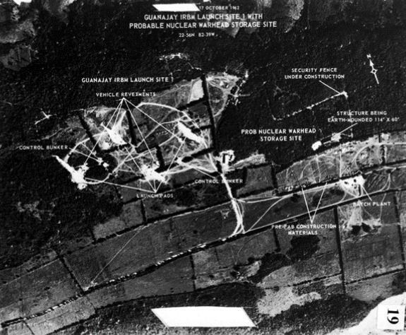
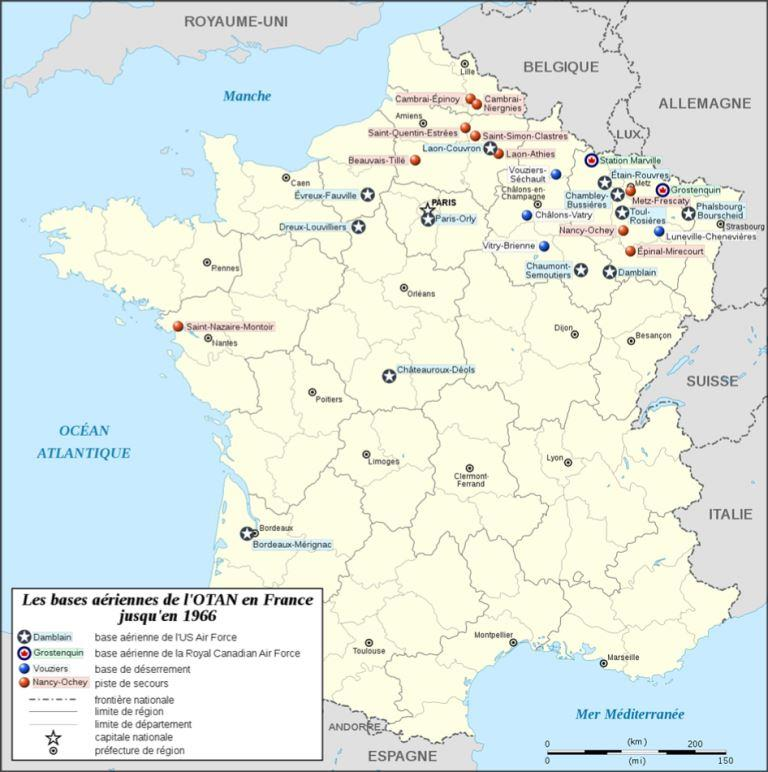
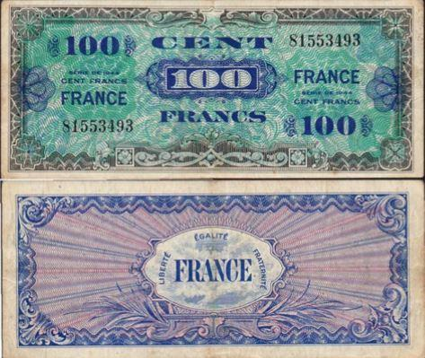
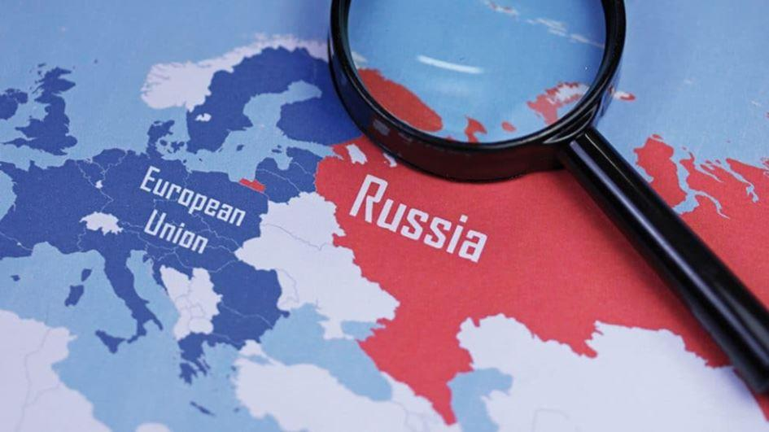

1999 est véritablement l’année charnière : la guerre du Kosovo, à nouveau dans la zone d’intérêt russe, fait la démonstration que les Etats-Unis ne s’embarrassent ni des objections russes ni même d’un accord de l’ONU.
Concomitamment, l’adhésion à l’OTAN des ex-satellites que sont la République tchèque, la Hongrie et la Pologne ne peut pas ne pas être perçue en Russie comme la manifestation d’une posture dominatrice et potentiellement hostile.
Il est vrai que l’engagement, cette même année, de la Russie dans une impitoyable deuxième guerre de Tchétchénie, pouvait apparaître pour ces mêmes pays précédemment satellisés comme marquant la résurgence d’un impérialisme lourd de menaces pour eux.
Ils n’auront de cesse dès lors de réclamer la protection de l’OTAN, en fait de la puissance américaine.
C’est tout particulièrement vrai des pays baltes, avec leurs importantes minorités russes ; en 2004, ils finissent par être admis eux aussi dans l’OTAN en même temps que la Bulgarie, la Roumanie, la Slovaquie et la Slovénie. Comment tout cela n’aurait-il pas été interprété à Moscou comme le parachèvement d’un investissement ?
Mais quand l’Ukraine est agitée de soubresauts qui peuvent augurer d’un même résultat, une ligne rouge est franchie pour le Kremlin ; plus que la présence d’une population russe majoritaire au Donbass, la position stratégique de la presqu’île de Crimée comme seule ouverture de la Russie sur la Méditerranée et base de sa flotte exige que soit mis un coup d’arrêt.
On connait la suite : appui russe à peine masqué aux sécessionnistes du Donbass, annexion de la Crimée1, sanctions euro-américaines imposées à la Russie à titre de rétorsion.
Dans ce processus, côté occidental, aiguillonné par les ex satellites de l’URSS, il est clair qu’on a méconnu une donnée de base des relations internationales soucieuses de concorde et de paix : tout État, a fortiori une puissance - fût-elle en grandes difficultés- possède, au-delà de son territoire, des zones d’influence, au minimum d’intérêt. La sagesse veut, de la part d’un État tiers, qu’aucune action n’y soit conduite de nature à susciter l’inquiétude du grand voisin, a fortiori à le provoquer ou l’humilier.
C’est pourtant ce qui fut fait avec l’adhésion à l’OTAN d’États manifestement situés dans la zone d’intérêt russe.
Pour prendre la mesure de ces événements, souvenons-nous des réactions américaines à l’aventureuse mise en place de fusées à Cuba par l’URSS en 1962, autrement dit dans la zone d’intérêt américaine : on fut alors au bord du gouffre de l’apocalypse nucléaire et les répercussions n’ont pas cessé jusqu’à nos jours. La sagesse prévalut côté soviétique : Khrouchtchev fit marche arrière.
En l’occurrence, à partir de 1990, on a pour le moins manqué de sagesse et on a enclenché un processus de surenchère : en réponse à l’aventurisme occidental, dès que la Russie a pu stabiliser sa situation sous la férule de Vladimir Poutine, elle n’a eu de cesse de réaffirmer sa puissance.
Aujourd’hui, le mal est fait et un mur de défiance s’est édifié entre la Russie et l’Europe.
Pire encore peut-être, cette Europe s’est déconsidérée aux yeux des Russes, incapable de se poser en interlocuteur par sa sujétion de fait à la puissance américaine.
Dans cette impasse, la France doit retrouver le rôle qu’avait su, en son temps, jouer le général de Gaulle.
En 1966, en pleine Guerre froide, il avait alors osé retirer la France des structures militaires intégrées de l’Alliance atlantique, autrement dit de l’OTAN et, simultanément, obtenu que soient évacuées du territoire national à la fois les structures de commandement de cette organisation et les nombreuses bases américaines installées depuis la fin de la Deuxième guerre mondiale.
L’alliance demeurait, mais la France, dégagée de ce que le général de Gaulle désignait comme un « protectorat » de fait, retrouvait, par ce geste spectaculaire, son autonomie en matière de politique étrangère.
Aujourd’hui, dans une situation très différente, l’objectif doit être le même, tout particulièrement vis-à-vis de la Russie. Cependant, plus qu’hier, il ne peut se concevoir qu’élargi à l’Europe.
Pour s’en convaincre, les extravagances de l’actuel président américain devraient aider à porter un regard lucide sur les relations transatlantiques.
Les relations euro-américaines entre amitié proclamée et tutelle de fait
L’image de l’Amérique est, pour les Européens, affectée d’un coefficient irrationnel et d’une dimension affective prononcés.
C’est vrai, pour des raisons différentes, à la fois des Français, de ses partenaires historiques de la première union européenne et des nouveaux venus anciennement sous tutelle soviétique.
Il en résulte, dans le monde tel qu’il est, a fortiori dans ce monde marchand triomphant, une sous-estimation de la seule réalité qui vaille au bout du compte et que les errements de la présidence Trump ont le mérite de nous rappeler : l’intérêt national. En l’occurrence, ces intérêts ne sont pas convergents, ils peuvent même se révéler parfaitement opposés.
Pour autant, perdure une surestimation : l’Amérique porte le flambeau de la Liberté, avec une majuscule.
Pour les Français, dans notre inconscient collectif, l’ancrage d’une image sublimée de la guerre d’indépendance américaine est profond ; avec les « pères fondateurs » de la démocratie américaine, nous avons en commun d’être les promoteurs de valeurs humanistes universelles issues du Siècle des Lumières, au premier rang desquelles la Liberté, que nous aurions, les uns et les autres, à faire rayonner à travers le monde.
Cette vocation commune trouve, au XXe siècle, trois occasions pour être puissamment réaffirmée :
À l’issue des quatre années d’hécatombes sans précédent de la Première Guerre mondiale, l’intervention tardive des « boys » joue un rôle déterminant dans la victoire sur l’impérialisme germanique.
Puis, vingt ans plus tard, vient la Seconde, où il revient à l’Amérique, dans un scénario apocalyptique, de mettre un terme à l’immense régression de civilisation entreprise par l’hydre nazie en Europe.
Et enfin, à peine celle-ci terrassée, la même Amérique devient le rempart de la Liberté, au cœur de l’Europe, face au péril que fait peser le messianisme soviétique dans sa variante stalinienne liberticide et meurtrière.
La vision d’une Amérique éclairant le monde du flambeau de la Liberté, véhiculée par une culture désormais universelle, celle du western, du cinéma dans son ensemble, des séries télévisées, de la musique -jazz, rock, country…-, et même du vocabulaire courant, est prégnante.
Elle fait passer aux profits et pertes des faits pourtant fortement contrastés avec cette image, qui s’inscrivent dans une remarquable continuité historique :
Il en fut ainsi, jadis, d’une société esclavagiste dont les rémanences se poursuivent jusqu’à nos jours, ou des guerres indiennes, génocidaires avant la lettre, ou encore de la terrible et méconnue conquête des Philippines.
Hier, dans le contexte de la Guerre froide, ce fut une entreprise systématique de mise en place de régimes dictatoriaux, en Grèce, au Chili, en Argentine, au Brésil, en Amérique Centrale, au Viet Nam.
Aujourd’hui, plus que jamais règne une raison d’état que rien ne tempère, dans une affirmation de la politique, le cas échéant guerrière et fût-ce en cache-sexe de la promotion d’intérêts économiques bien compris, qui serait celle du Bien, incarné par les Etats-Unis d’Amérique, contre le Mal, attribut dont l’adversaire est systématiquement le suppôt.
Le même cynisme s’applique à ce qu’il faut bien appeler la guerre économique proprement dite et ce, tout particulièrement à l’encontre des Européens.
Tout cela est bien connu, mais rien n’y fait : s’opposer à l’Amérique serait se ranger dans le camp des ennemis de la Liberté et, de surcroît, faire preuve d’une ingratitude coupable.
On l’a bien vu lorsque le président Jacques Chirac a eu l’audace de dire haut et fort, par la voix de son ministre des Affaires Étrangères, ce qu’il en était de la deuxième guerre d’Irak programmée par Georges Bush junior. La violence des réactions aux Etats-Unis a surpris et peiné nombre de nos compatriotes pour qui « l’amitié franco-américaine » relève d’un postulat qui ne se discute pas.
C’était méconnaitre le mot du général de Gaulle pour qui « Les États n’ont pas d’amis, ils n’ont que des intérêts ». Il avait pu le mesurer : les Etats-Unis avaient été parmi les derniers à reconnaître son gouvernement provisoire dans le même temps où, dans le sillage des troupes U.S. qui débarquent en Normandie en juin 44, l’AMGOT2 se disposait à mettre notre territoire en coupe réglée et avait déjà préparé une monnaie d’occupation. Il faudra toute sa détermination pour y parer.
A qui interpréterait cela comme le fruit de l’antagonisme Roosevelt-de Gaulle, on rappellera quelques faits historiques pour le moins contrastés avec l’idée d’une amitié franco-américaine indéfectible.
En 1871, le premier télégramme de félicitation adressé à l’empereur Guillaume II au lendemain de sa victoire sur la France à laquelle il venait d’arracher l’Alsace-Lorraine était signé Ulysse Grant, président des Etats-Unis.
Au lendemain de la Première Guerre mondiale, les Etats-Unis se retirent du délicat processus de restauration de la paix, abandonnant alors la France et l’Europe à un destin qui devait se révéler funeste.
À l’heure de la décolonisation, la France fait la douloureuse expérience, notamment en Algérie, de menées politiques qui ne sont pas vraiment amicales de la part de son grand allié.
En bref, les Etats-Unis d’Amérique sont nos amis pour autant que nos intérêts convergent et que nous ne contrarions pas les leurs.
Comment d’ailleurs pourrions-nous leur en faire grief ? Que dirions-nous d’une politique nationale ou européenne qui sacrifierait nos intérêts au nom d’on ne sait quelle amitié ?
Soyons donc conscients que l’Amérique n’a pas attendu Donald Trump pour faire présider le slogan « America first » à sa politique étrangère.
L’épisode de la deuxième Guerre du Golfe a illustré ce qu’il en coûte pour celui, fût-il réputé ami, qui ose exprimer des options divergentes de celles du grand allié.
Aujourd’hui, la guerre économique qui fait rage laisse peu de place à « l’amitié ».
Quant aux décisions unilatérales prises à Washington à l’encontre de l’Iran, les mesures de rétorsion prises à l’encontre de ceux qui ne s’alignent pas, quoi qu’ils en pensent, sont le révélateur d’une situation objective de sujétion.
Qu’en conclure sinon qu’il ne saurait exister de politique autonome pour la France sans se dégager de cette sujétion ?
Ce qui est vrai pour la France l’est tout autant, et plus encore, pour l’Europe.
Un « grand dessein » pour l’Europe
On souligne souvent le contraste existant entre les exceptionnelles capacités de l’Europe dans la plupart des domaines qui fondent la puissance et son infirmité politique à en faire usage.
On avance pour cela des explications politiques et structurelles internes.
On peut ajouter le rôle constant, hérité de l’histoire, du Royaume Uni, pour conforter cette infirmité politique.
Mais qui ne voit, de surcroît, qu’une Europe unie et parlant d’une seule voix, aussi bien en matière économique que politique, devenant dès lors l’une des puissances majeures, ne saurait être acceptable, pour les Etats-Unis, qu’assujettie ?
Il en résulte que si l’Europe veut exister au monde en toute autonomie, il n’est pas d’autre voie pour elle, tout comme pour la France, que de s’affranchir de la tutelle américaine.
Non pas pour lui substituer on ne sait quelle tutelle russe, mais pour concevoir et conduire une politique étrangère commune conforme à nos intérêts et à notre vocation, ce qui implique une inflexion profonde de nos relations avec la Russie, avec l’instauration d’un véritable partenariat.
Nous devons en convaincre nos partenaires historiques, au premier rang desquels l’Allemagne et les pays latins.
Les initiatives d’une brutalité sans précédent de l’actuel président américain nous y aident pour ce qui concerne le champ économique.
En revanche, au plan stratégique, l’hypothèque reste lourde.
C’est évidemment vrai pour les nouveaux venus issus du monde soviétique.
Mais ce l’est aussi pour les membres historiques.
Outre que la qualité d’ancien KGBiste du nouveau tsar qu’est Vladimir Poutine, s’y prête dans l’esprit de beaucoup, ce n’est pas impunément qu’un demi-siècle durant, l’empire des soviets a été pour les uns « l’ennemi probable », pour les autres le « grand frère » dont les Allemands de l’Est, les Hongrois, les Tchèques, les Baltes ou les Polonais avaient dû subir le joug implacable.
Il a cessé de l’être, comme par une sorte d’implosion que nul n’avait vu venir, voici trois décennies.
Nul doute pourtant que, chez les héritiers des divers « printemps » de Varsovie, de Budapest ou de Prague, la mémoire reste vive d’une sujétion à Moscou sur deux générations, jalonnée de répressions impitoyables… On peut comprendre que la patte de l’ours soviétique, l’URSS fût-elle redevenue Russie, désormais privée des marches de son empire et de ses satellites, demeure redoutée. Il en résulte que, là où nous parlons de nous dégager de la tutelle américaine, nos partenaires orientaux y aspirent éperdument…
Le défi est de leur donner à comprendre que les garanties offertes par une Europe forte partenaire de la Russie ouvrent des perspectives infiniment plus productives.
Pour les nations d’Europe occidentale autoproclamées « monde libre », l’hypothèque est moins évidente. Elle est pourtant profonde, à la mesure du caractère structurant que, durant un demi-siècle, avait revêtu ce qu’il était convenu d’appeler « la menace » : ainsi les stratèges dénommaient-ils l’agression potentielle de l’immense armada du « Pacte de Varsovie », équivalent de l’OTAN côté « ennemi conventionnel ».
Il ne faut pas sous-estimer, dans les administrations et tout particulièrement dans les armées depuis le retour à l’OTAN pour ce qui concerne la France, le poids des habitudes et des procédures.
Seul un « grand dessein » pour l’Europe peut avoir raison de ces inerties structurelles.
Le temps est venu, à l’heure des redoutables défis qui se posent à l’humanité tout entière, de tracer les perspectives d’une nouvelle Europe.
Animée d’un esprit de Renaissance, cette Europe-là devra peser dans les affaires du monde à parité avec les Etats-Unis d’Amérique, la Russie, la Chine et les puissances émergentes : pour cela, elle ne saurait se concevoir sans un partenariat étroit avec le grand voisin russe.
Ce « grand dessein » trouvera sa source et son moteur dans ce qui reste le cœur d’une Europe qui offre au monde l’exemple de sa réconciliation au lendemain d’un XXe siècle de feu et de sang : une union franco-allemande revivifiée.
J-R. B.
NOTES
1 Qu’un membre permanent du Conseil de Sécurité de l’ONU enfreigne la règle admise depuis la fin de la Deuxième Guerre Mondiale selon laquelle il y aurait intangibilité des frontières, est jugé inacceptable et justifie les sanctions alors sévères prises par les Occidentaux. Pourtant, ce n’est pas un précédent : la sécession et l’indépendance du Kosovo avaient ouvert cette voie par la force. De surcroît, il faut convenir que le rattachement administratif de la Crimée à l’Ukraine par Khrouchtchev en 1958 d’une région conquise et peuplée par les Russes au détriment des Tatars dès le XVIIe siècle fragilise les revendications ukrainiennes appuyées par les Occidentaux.
Quant au référendum organisé en préalable au retour dans le giron russe, il a donné une approbation massive, seuls les Tatars, minoritaires, s’y étant opposés.
2 Allied Military Government of the Occupated Territories.
Partager cette page